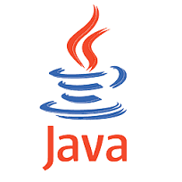

Congratulation your langwich is: Java.
Java is also a favorite of enterprise companies, but its appeal is broader as well: it's one of the most popular of all programming languages, and it's used in everything from for high-performance processing to building Android user interfaces. Because Java has been very popular for a very long time and is used in so many applications, it is also a very high-demand language. If you're interested in working for an enterprise-level company, as an Android developer, or in high-performance applications, Java could be a good language to learn.

Congratulation your langwich is: Ruby.
Ruby is a favorite language of developers building interactive web applications. If an app involves users creating accounts, entering information, and interacting with dynamic content, there's a good chance it is built with Ruby. Ruby became popular because the Rails framework, which is written with Ruby, simplified many of the common tasks associated with building web applications.
Congratulation your langwich is: PHP.
PHP is most used in content-heavy websites with relatively little user interaction. The most popular content management systems - Wordpress, Drupal, and Joomla - are all written in PHP, and everything from local restaurants' websites up through large complex government deployments are built with these tools. If you're keen to work for an agency that builds websites for clients, or if you like the idea of building out sites for brands, businesses, and organizations, PHP is a great direction to go.